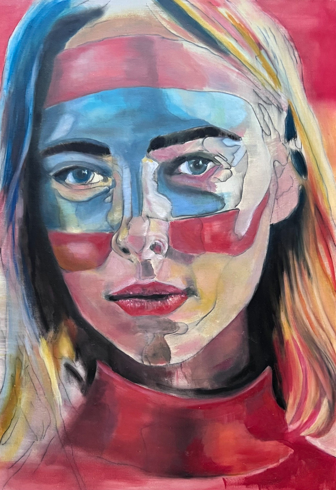

NOT THERE YET / EXPERIMENTAL ART
LIVING ART LIVE
YOUR PAINTING COMES ALIVE
CAMERA NOT CONNECTED
MOVE LEFT TO RIGHT
RAISE YOUR ARMS — CHANGE THE FLOW
THE PAINTED FACE RESPONDS TO YOUR HEAD MOVEMENT
Open this public HTTPS page in Safari or Chrome, allow camera access, then tap START CAMERA & BODY TRACKING.
INITIALISING LIVING ART
Loading body-tracking model…
This may take a moment the first time.